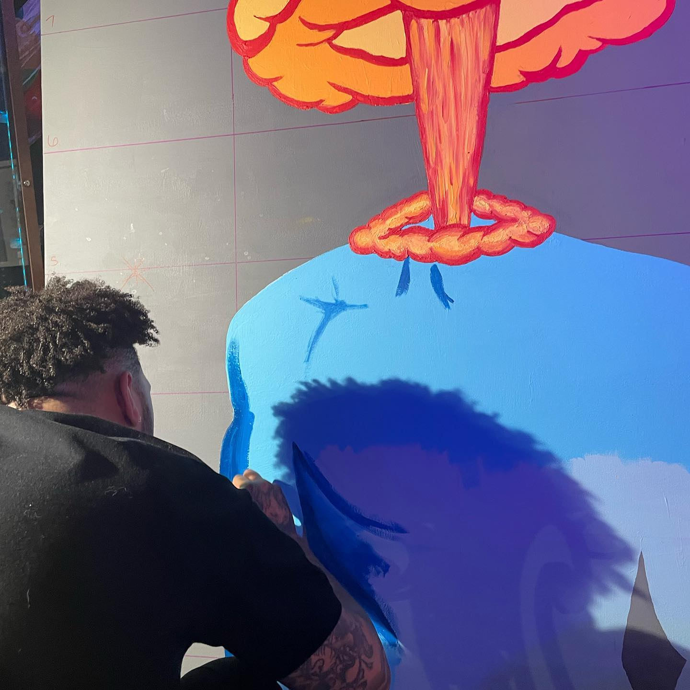
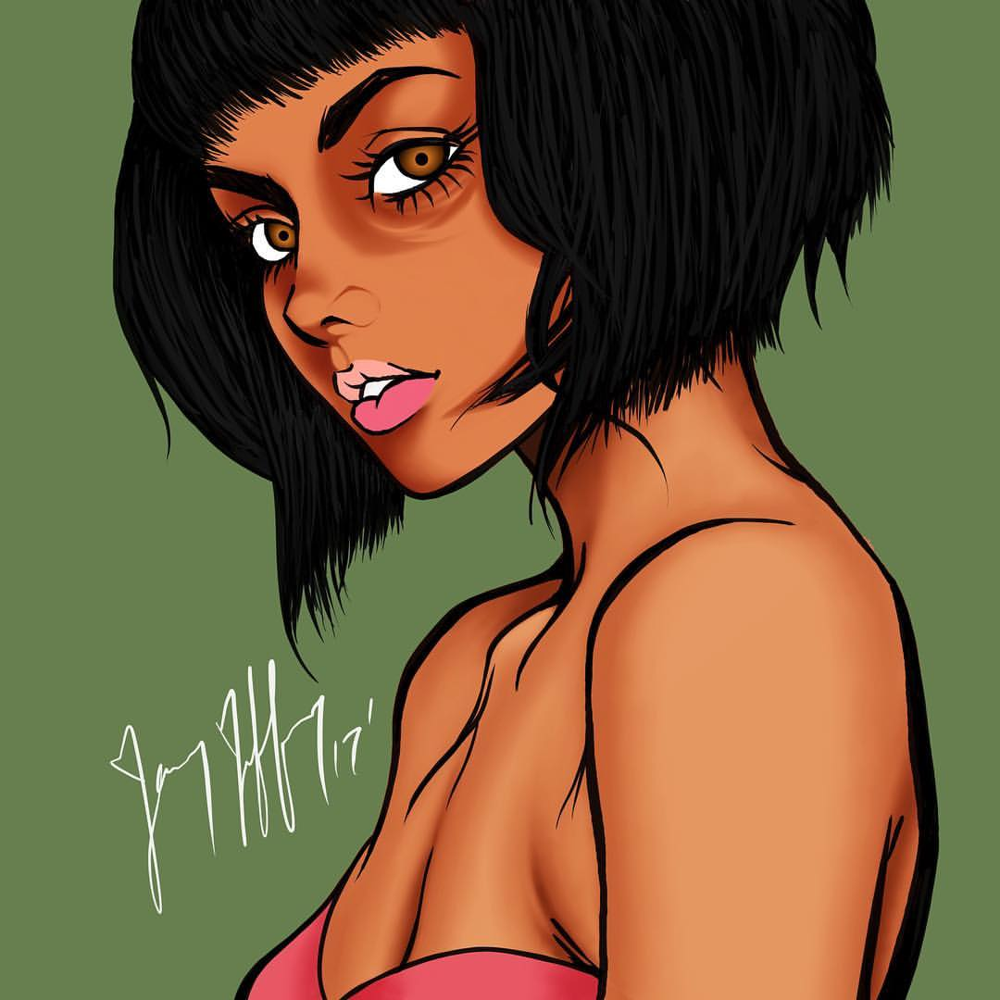

Some of my interests...
Painting
"One of my absolute favorite things to do is painting. The photo here shows a work in progress titled "Implosion". It is 60"x72" in size and is done in acrylic paint on canvas, that i painted a very neutral grey. The colors I chose were hues of the compliments blue and orange, blue for the body of the figure and orange for the mushroom explosion. This particular painting means a lot to me because it was a literal expression of how I was feeling at the time I created it; I was overwhelmed with all of the emotion inside of me and felt like I was on the verge of imploding. Hence the title Implosion"
Drawing
"Another thing I absolutely love to do is drawing. The drawing in the photo is a depiction of the woman I love; this is more or less an image of her alter-ego called Sara. At the time I created this we actually weren't talking at all and I missed her immensely so I drew this and posted it on my social media accounts in hopes that she would call. The funny thing is it actually worked; she knew that i did it so she would contact me but she did so anyway. This was done in Procreate, with an apple pencil on my ipad pro."
Logo Design
"I really enjoy creating logos; the photo here shows a logo that I created recently and is possibly my most favorite. This is for a company called Stone & Brier, they create branding packages and design solutions for many companies across different industries. I have had the honor to work closely with them on many projects and currently maintain residence there as creative director."